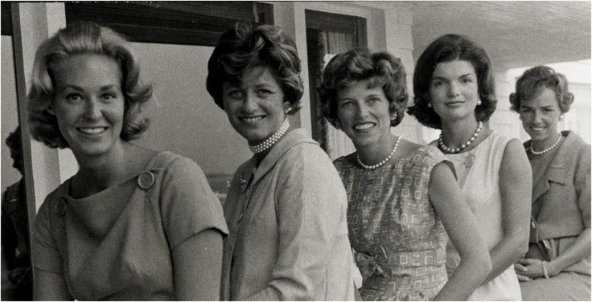

Lời Nói Đầu

hững người đàn bà trong gia đình Kennedy đều theo đuổi lối sống cá nhân và độc lập. Phần lớn sự ngưỡng mộ hướng về họ nằm trên phương diện này. Mỗi người mỗi vẻ, dù họ vẫn duy trì sự đồng nhất, đặc thù của dòng họ. Chủ tâm của tôi là ghi nhận từng người một, từng thời gian một. Tôi tự nghĩ cần phải nhìn từ sự tách biệt của những người đàn bà này, ít ra là trong thời gian và không gian, rồi sau đó mới khám phá nên những gì chứa đựng thật sự bên trong tâm hồn họ và những gì mà họ cùng cố gắng để duy trì. Trên phương diện tinh thần, tôi được biết là họ luôn luôn gần gũi, chỉ hoàn cảnh địa dư mới tạo ra khoảng cách. Chỉ đôi khi mà thôi. Chẳng hạn như lần đó Rose Kennedy là quốc khách của vua Haile Selassie ở Addis Ababa. Bà được mời đến tham dự buổi lễ khánh thành thư viện kỷ niệm John F.Kennedy, con trai bà, ở đại học đường Haile Selassie. Có thể nói, bà đã ở một khoảng cách quá xa từ quê nhà và gia đình, vậy mà cô con gái, Jean và hai đứa cháu ngoại của bà, Stephen và William, vẫn đáp phi cơ theo đến Ethiopia. Chẳng là Jean muốn tổ chức sinh nhật với sự hiện diện của mẹ.

Joan, Jean, Eunice, Jackie, and Ethel Kennedy
° ° °
Trở về xứ, sau năm ngày bận rộn ở Ethiopia, bà Rose Kennedy bắt tay ngay vào công cuộc vận động tranh cử của Ted, con trai út của bà. Bà nêu gương can đảm, duy trì truyền thống tương trợ của gia đình, cùng với đứa cháu nội là Joe, không ngừng nghỉ vận động để Ted (tức Edward M.Kennedy) vào Thượng Viện, ngày này qua ngày khác, cho đến khi đạt đến kết quả thực sự.
Trong gia đình, Rose Kennedy vẫn liên tục nắm giữ đời sống một cách kiên quyết. Bà thích chơi gôn và dân chúng ở Hyannisport cho biết bà vẫn còn đi dạo bộ thật xa mỗi ngày. Ở cái tuổi tám mươi, mỗi buổi sớm đi hai dặm đường và bơi lội trong nước lạnh căm, quả là một hiện tượng phi thường. Riêng tôi, tôi thích ngắm cách ăn mặc của Rose Kennedy: đẹp, đúng thời trang, và có thể nói không có một góa phụ nào ở Mỹ ăn mặc đẹp hơn bà. Với lối ăn mặc ấy, bà có một chỗ đứng riêng so với bất kỳ một thiếu phụ trẻ nào.
° ° °
Sinh nhật thứ 81 của Rose Kennedy được tổ chức tại nhà ở Hyannisport, có mặt cô con gái, Eunice, và con dâu của bà, Ethel. Thật đơn giản, bà không hề nghĩ đến những bộ đồ mới đúng thời trang đặt may Tận Ba Lê, cho ngày vui đó.
Đôi khi, với gia đình Shriver, người con rể của bà, bà đáp phi cơ sang Luân Đôn đê dự một cuộc vui.
Khi ở Hoa Thinh Đốn, trong ngày khai mạc Trung tâm Kennedy, bà dùng trà riêng với Tổng thống Nixon và phu nhân, và vẫn duy trì liên tục lịch trình giao tế đầy bận rộn của bà.
Trên tất cả, tôi chắc rằng bà không bao giờ quên Rosemary, người con gái lớn trì độn, mãi mãi là một đứa trẻ ấy của bà. Rosemary hiện được gởi nội trú trong trường Sanit Coletta, Ở Wisconsin, dành riêng cho các đứa trẻ ngoại lệ. Bà Rose Kennedy đã tiến đến nơi chốn trong đời sống mà tất cả chúng ta phải tiến đến, trong tư cách của bậc cha mẹ có những đứa con chậm phát triển như thế. Tạp chí Life ghi lại lời nói của bà vào ngày 17 -7-1970: "Nỗi bất hạnh ấy hình như là ân khải mà Rosemary dành hầu hết cho chúng tôi, cho những kẻ khác trong gia đình."
Lời nói này, bà chứng tỏ đã hơn sự chấp nhận thông thường của hoàn cảnh hiện hữu. Bà đã tiến đến một nơi của yên bình và ý thức. Biết thích nghi với đời sống, bà vui vẻ sống. Bà tiếp tục học tiếng Pháp, chơi dương cầm, bà thích nhạc cổ điển nhưng cũng thích nhạc kích động của Andy Wiliams. Và bà luôn luôn theo dõi bọn nghệ sĩ trẻ, không phân biệt nơi nào trên thế giới.
Bà có 28 đứa cháu tất cả, chỉ gần gũi chúng qua thư từ, điện thoại, nhưng dĩ nhiên, niềm hân hoan của bà không kể xiết khi chúng về ngôi nhà ở Palm Beach để thăm bà. Bà cũng thường viết vài chữ cho Ethel, con dâu của bà, để nói về một chuyện nào đó sắp xảy ra. Viết thư tiện lợi hơn hết. Tôi đã học hỏi cha tôi điều này. Bà nói với tạp chí Vogue, tháng 7-1971, như thế.
Tuy vậy, bà không hề khép mình vào bất kỳ một gò bó nào, hoặc để cho sự ràng buộc đến từ kẻ khác, nhưng bà chấp nhận sự phát triển của tình bạn, cả những người trẻ tuổi. Và tôi biết bà thường nhớ lời những người bạn già. Thật vậy, mỗi năm bà đều gọi điện thoại để tán chuyện gẫu với một ông bạn già ở tận bên Anh.
Tôi và bà, là hai kẻ cùng thế hệ, tôi có thể mạn phép xét đoán mà không sợ sai lầm, về nhưng cần thiết đặc biệt đòi hỏi cho cái tuổi này. Tôi cũng thiết tha với đời sống, nhưng thay vì nó đến như lòng mong mỏi, mà nó chỉ đến bằng những bi thảm và những thất vọng. Chúng tôi, cả hai đều may mắn là có sức khỏe khá tốt, nhưng điều này cũng chưa hẳn sẽ luôn luôn như thế. Bà Rose Kennedy sẽ chấp nhận các đột biến với sự cố gắng từng trải của bà và chính tôi cũng hy vọng được như thế.
° ° °
Tôi cũng là một trong những người trong chúng ta, vẫn còn tiếp tục suy ngẫm trường hợp của Jacqueline Onassis. Không ai nhận lấy sự bất công và bị ngược đãi bằng những người đã trở thành là người của công chúng trong xã hội chúng ta. Không có một phương cách nào nhằm chống lại những bài báo, những quyển sách và hình ảnh dâm ô, mà cũng không hề dành một thực tế cần thiết nào cho những người của công chúng, những phạm nhân bị ngược đãi ấy, như là những con người đúng nghĩa của nó. Người ta tiếp tục khai thác nhằm để bán một bài báo, một bức ảnh hoặc một quyển sách. Tất cả nhưng bẩn thỉu này được cho phép, ít nhất trong xứ sở chúng ta, nhân danh tự do báo chí.
Jacqueline Onassis phải bền lòng nhẫn nhục, chịu đựng một đời sống tách rời hơn mọi người, mặc dù nàng vẫn là nàng, và có mọi quyền của con người bình thường.
Jacqueline Onassis đã không thể viết ngay cả thư từ cho bạn bè trong vòng rình mò của những tên trộm, thường là bọn thư ký và đầy tớ trong nhà, chúng sẽ đem bán ngay những bức thư đánh cắp được. Tôi nghĩ, những người hiểu nàng phải là những người cùng hoàn cảnh như nàng. Nàng không đến trong ngày khai mạc Trung tâm Kennedy, tôi thông cảm việc này. Nếu tôi là nàng, tôi cũng sẽ không đến, với những lý do cá nhân và riêng tư được nêu ra. Nàng đã đến tòa Bạch ốc vào tháng giêng năm 1970 để nhìn lại những bức chân dung của chồng (cố Tổng thống Kennedy) và cả nàng. Sau đó, nàng lại vào tòa Bạch ốc cùng với các con và dùng cơm với Tổng thống Ni xon và phu nhân. Bức chân dung toàn thân của nàng, vẽ cảnh nàng đứng trước lò sưởi trong ngôi nhà riêng ở New York, mặc chiếc áo thụng màu hoa đào nhạt, tôi cho đấy là một tuyệt phẩm. Họa sĩ Aeron Schickler đã diễn tả nàng như là một người đàn bà của phi thường, đẹp não nùng và tràn trề sức sống... một loại đồng nữ đầy ma thuật.
° ° °
Những người không biết rõ Jacqueline Onassis, họ đã phán xét nàng, theo ý tôi, đầy thiên kiến và ích kỷ, qua những thú vui hời hợt bên ngoài của nàng. Đó là không thật. Nàng còn những cá tính ẩn giấu, những việc làm không ồn ào trong cố gắng để thoát ra sự ám ảnh triền miền của những kẻ rao bán chuyện người khác và của dư luận bất công đáng khinh bỉ. Chính cha chồng của nàng cũng từng là nạn nhân đồng cảnh ngộ.
° ° °
Con gái của người đàn bà đẹp bất hạnh này là Caroline, một cô gái hay xúc cảm và duyên dáng, có khuôn mặt đáng yêu và dáng điệu rụt rè, đó là những đường nét ghi sâu trong tâm hưởng mọi người. Sinh nhật của cô gái này là ngày 27-11, trùng hợp với ngày đau buồn, ngày xảy ra cái chết của người cha. Tôi chắc rằng Caroline sẽ mang nỗi bi thảm trong trí nhớ cho đến ngày cuối của cuộc đời.
Trong hoàn cảnh bêu rếu này, Caroline vẫn tỏ ra là một cô gái không dễ bị chi phối. Cô vẫn vui vẻ rong ngựa, trượt tuyết, leo núi, vẫn là một sinh viên xuất sắc và một nữ họa sĩ đầy hứa hẹn. Caroline hơn hầu hết những đứa con khác, theo Jacqueline, là ở đấy. Như Lester David đã viết trong quyển sách Ethel của ông:
Caroline nuôi dưỡng bằng sự tao nhã. Cô ta năng thăm viếng bà ngoại, bà Hugh Auchincloss, ở Newport và bà nội, Rose Kennedy, ở Hynnisport hoặc ở Palm Beach.
Đời sống của Ethel Kennedy (góa phụ của cố Thượng nghị sĩ Robert Kennedy) vẫn duy trì sự can đảm, nàng luôn luôn sống và tiếp tục sống sau khi chồng nàng chết. Nàng đã không tỏ ra buồn rầu ngoài công chúng hoặc trong gia đình. Nàng vẫn luôn luôn tỏ ra vui vẻ. Cái gì đã mất, không ai biết được, qua sự bận rộn, nói cười luôn miệng của nàng. Những bạn cũ của chồng ngoài John Giêng, Art Buchwald, Theodore White đến thăm nàng, cùng với những người khác, nàng còn có bạn bè riêng.
Tuy nhiên, đời sống của Ethel Kennedy phần lớn dành cho các đứa con. Nàng vẫn phải tắm và cho đứa nhỏ nhất ăn, dùng điểm tâm mỗi sớm với những đứa con lớn tuổi hơn và tham dự vào các trò chơi của chúng...
Trong quyển sách của Lester David cho biết, khi Joe Kennedy III nghỉ hè và học leo núi Rainier ở Seattle, Ethel đã bay lên và cùng leo núi với con.
Khi con trai nàng, Robert Kennedy Jr, bị bắt vào tháng 8 năm 1971 với đứa em họ là Sargent Shriver III, cả hai lúc đó đều 16 tuổi vì tội sử dụng cần sa, cùng với mười đứa trẻ khác, chánh án L. Murphy đã gửi trả chúng về nhà và cho biết nếu sau một năm chúng không sử dụng nữa thì tất cả tội trạng sẽ được miễn tố. Dĩ nhiên là chúng từ bỏ. Tôi đã cảm phục Ethel Kennedy qua sự giúp đỡ cai thuốc mà nàng dành cho con. Lần đó nàng nói: Tuy đây là cách giải quyết của pháp quyền, nhưng Bobby là một đứa trẻ tốt và chúng tôi luôn luôn kiêu hãnh vì nó. Tôi sẽ tin nó.
Quan tâm của tôi cũng dành cho đứa cháu và các gia đình của những thanh niên khác. Tóm lại, nàng tùng phục pháp quyền, đồng thời tin tưởng con mình.
° ° °
Kathleen là con gái lớn nhất của Ethel Kennedy, hai mươi tuổi, cô ta học ở Radcliffe, nhưng sang Florence, Ý, một năm để học về hội họa. Kathleen cảm phục Matisse, yêu thích Beethoven.
Bình phẩm về Jacqueline Onassis, báo chí thường đề cập đến Ethel. Có những lý do tinh tế mà tôi nhận thấy không cần đề cập nhiều đến, nhưng họ lại tập trung vào những bản năng không kiểm soát được của những người đàn bà và bản năng cởi mở của kẻ khác, những thứ thường xảy ra dễ dàng đối với một người bình thường, là những cái thường gây sự hâm mộ nhất dành cho phái yếu.
° ° °
Nếu phải chọn một người đàn bà trội nhất trong gia đình Kennedy lúc này, thì sẽ thất bại đối với Joan Kennedy, ít nhất cho đến khi biết rõ Ted Kennedy, sẽ không chạy đua trong cuộc bầu cử Tổng thống tới đây.
Tuy nhiên, Joan Kennedy có một nhân dáng riêng - độc lập, mẫn tiệp, hấp dẫn, tận tụy với người chồng hào hoa, không hề phản kháng trước những tin đồn - và nàng thích đi bên cạnh chồng lúc nào xét thấy có thể. Bản tính của Edward M. Kennedy dĩ nhiên có sự đổi thay, từ thảm kịch của hai người anh và sau tai nạn xe hơi gây ra cái chết cho một cô gái đi chung xe với ông, Joan đã phải tế nhị hơn, nhằm tìm cách thay đổi hoàn cảnh. Tôi tưởng sự thảnh thơi đã rời khỏi cuộc sống của họ. Sao lại không? Thảm kịch gần như tuyệt đối - và nàng như kẻ bị vùi dập nhiều lần - đời sống và cá tính hẳn khó duy trì.
Thảm kịch không chỉ trong quá khứ mà nó sẽ triền miên trong -tương lai, nếu Ted Kennedy chạy đuổi theo chức vụ Tổng thống. Một cái chết thứ ba sẽ xảy ra? Ted sẽ nhận thêm sự đe doạ và lòng ganh ghét, mà tôi có thể nói, không có một người Mỹ nào hơn được, ngoại trừ Tổng thống Nixon. Những thứ ấy trùm lấp bóng tối lên đời sống lứa đôi của Ted và Joan. Một cuộc liều mạng dưới sự đe doạ của tử thần? Ai có thể nói được, trừ phi kẻ trong cuộc. Tôi cũng không đoán được ý nghĩ của Ted.
Ted luôn luôn mệt mỏi. Chứng bệnh đau lưng hành hạ ông mỗi buổi chiều vào khoảng năm giờ và, nếu xa nhà, Ted có tật gọi giây nói luôn cho gia đình. Chính Ted đã nói: Không có gì về tôi mà các bạn không hiểu. Tôi không thể ngã gục. Tôi không thể bị bẻ cong hơn nữa. Đối với tôi, tôi không chắc rằng người vợ sẽ không bị tổn thương hơn nữa. Một lần bị tổn thương và có thể lần thứ hai xảy ra...
Năm nay Pat, Eunice và Jean sống âm thầm, gác ngoài tai mọi tin tức, ngoại trừ những tin tức quan trọng, như việc khai mạc Trung tâm Kennedy chẳng hạn. Tin riêng, tôi biết được Eunice Shriver rất bận với nỗi lo phiền vì hiếm muộn. Nhưng nếu một khi người anh cuối cùng của họ nhảy vào cuộc tranh cử Tổng thống, tất cả sẽ có mặt, để yểm trợ hết mình.
Đó là truyền thống của gia đình Kennedy.
° ° °
Những người đàn bà trong gia đình họ Kennedy này, tất cả đều kiên quyết và mạnh dạn.
PEARI S. BUCK
Tháng giêng 1972
Danby House